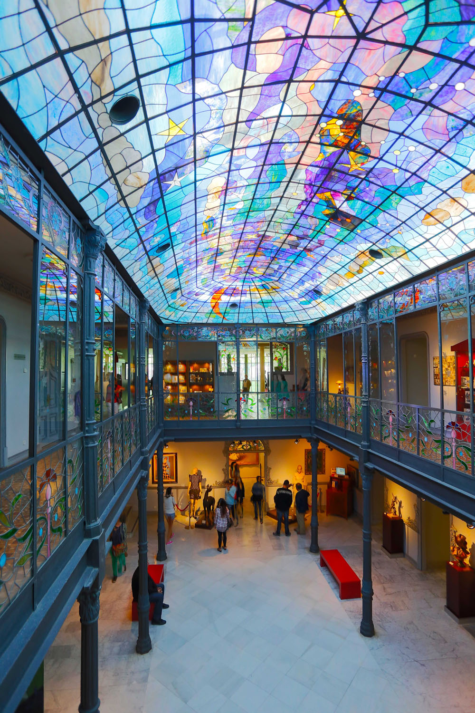
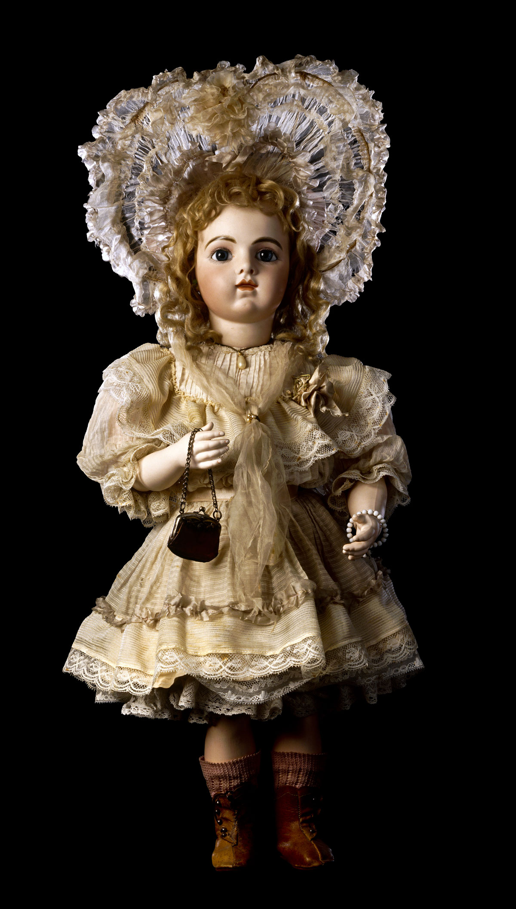
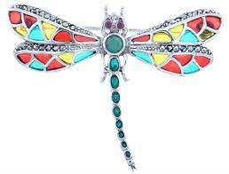
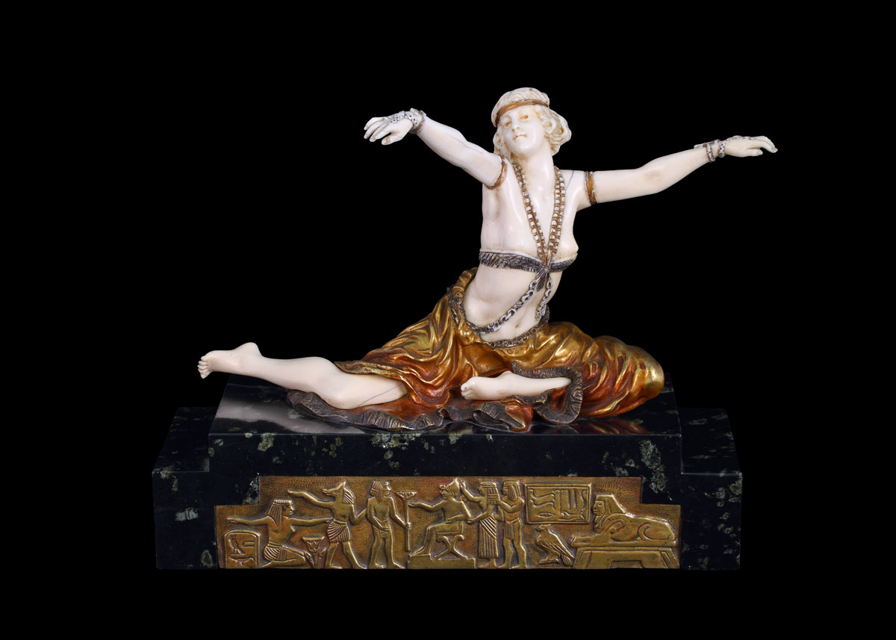
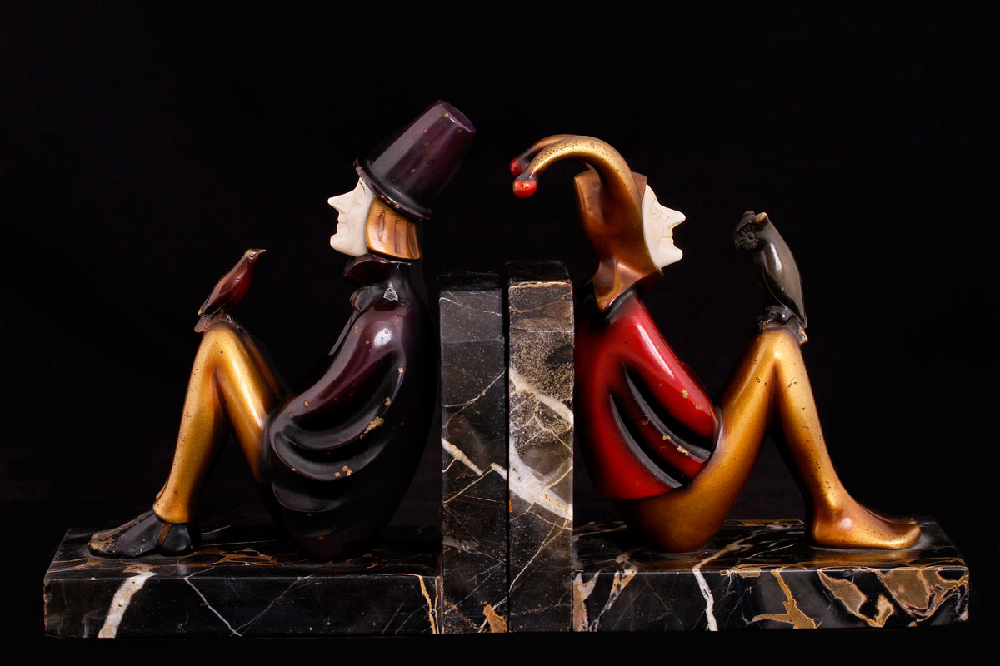

Stained glass window in the patio
Although the initial conception of the patio, when the building was used as a family home, was an open patio, it
is currently closed with a leaded stained glass window made by the Catalan artist Juan Villaplana according to a
design by Manuel Ramos Andrade. In the stained glass window, the use of a wide range of colors prevails with which
to represent the sky, the clouds, the moon or the stars.

Doll
The collection exhibited at the Art Nouveau and Art Déco Museum is considered the best public collection of porcelain dolls in the world. Manuel Ramos Andrade, an expert in the history and evolution of the French and German doll, rigorously selected the best pieces according to their quality, rarity and state of conservation. The best manufacturers are represented in this collection, made up of more than four hundred pieces. Jumeau, Bru, F. Gaultier, A. Thullier, Schmitt, Steiner or Petit & Dumontier, are some of the famous French workshops whose production is characterized by the sweetness of their delicate biscuit faces.

Art nouveau
Japanese art was a strong influence on the artists of the moment, its composition, its way of capturing nature, the luminosity of the colors and the expressiveness of the contours stimulated a large number of artists. In addition, in the Japanese decorative arts, the value attached to the object and its technique was very much in line with the Arts and Crafts Movement's battle to break down the barriers between Fine and Decorative Arts, considered inferior art. All the creation centers embodied their particular vision of Japanese art in their production. The last decade of the 19th century saw the flourishing of an industrialized society and artists showed their rejection by proclaiming a return to nature. Given the advance of the mass production of the machine, the defense of crafts and processes was proclaimed. The result was one of the most prolific periods in the decorative arts.

Art deco
Art Deco was a style that affected all facets of design. The term was coined in the sixties referring to the art generated in the interwar period. It lived its moment of greatest splendor at the International Exhibition of Decorative Arts in Paris in 1925, although its influence has even reached our days. Faced with the curved line and the sinuosity of Art Nouveau, in Art Deco the straight line and geometric volumes prevail. It is an eclectic style that arises from the sum of many trends. Among the main influences of Art Déco, it is necessary to highlight the art of the avant-garde, mechanization and the archaeological discoveries of Ancient Egypt or Mesopotamia.

Chryselephantines
Art Nouveau chryselephantines usually represent mythological characters, oriental stereotypes or female figures treated in a symbolist way halfway between the real world and the world of fantasy. Artists like Théodore Rivière (1857-1912), Ernest Barrias (1841-1905) or Jean-Léon Gérome (1824-1904), encouraged by the possibilities of this material, began to investigate with it in their creations. These first approaches to Chryselephantine sculpture made by the established artists of the moment were praised by critics. The chryselephantines that were produced in the Art Deco period reflect the maturity of the technique, as the workshops and machinery were gradually perfected. In addition, the publishers had experienced masters in ivory carving and modeling artists who were dedicated to designing chryselephantines, that is, the work was conceived from the beginning to fully exploit the plastic possibilities of each material, hide the joints and achieve a satisfactory finish. aesthetic impact.

Nancy school
Furniture from the Nancy School made in the workshops of Émile Gallé or Louis Majorelle, Catalan works by Gaspar Homar or Joan Busquets are displayed alongside Art Déco examples by artists such as Jacques-Émile Ruhlmann. Likewise, you can see Vienna bronzes with an oriental theme.